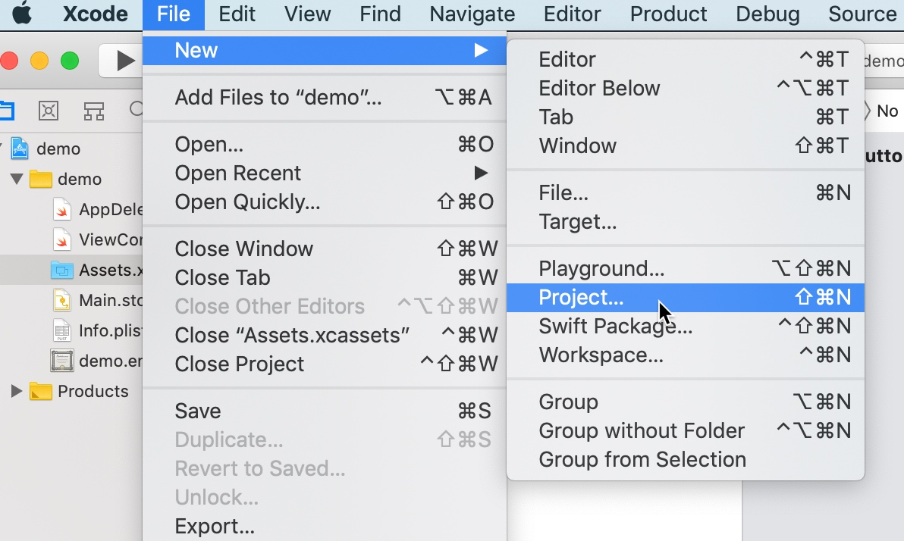

10/24 设计模式之桥接模式 Bridge Pattern
类别：结构型设计模式
目的：将抽象和实现按维度拆分成两部分（通常两类接口），使得两部分都可以独立的进行迭代（变化），防止类数量爆发式增长
完整代码参考：https://1drv.ms/u/s!AquRvPzqx59Ri33d5NhvwuPkHa8F?e=LLClnq
典型场景
被抽象数量比较多时，新增特性导致抽象数量可能会骤增（比如一个特性就增加2-3个类）就可以考虑使用桥接模式了
比如抽象万能电视机遥控场景、存在多个遥控场景(每个场景功能不一样)，以及要适配多种电视类型
再比如造车，存在多种类型的车（卡车、公交车、小轿车等），每种类型的车的生产过程不尽相同
这里拿万能遥控器场景举例，场景参考如下：
- 基本遥控场景：开机、关机
- 看电视台场景：选择电视台、同时也可以开关机
- 看电影场景：播放、暂停、开关机等
可以看到这个场景是有层级结构的，比如电视台场景就涵盖了基本的开关机场景
目前举例适配的电视类型参考如下：
- 索尼电视
- 三星电视
可以看到这个电视类型的适配可能会更多
9/24 设计模式之迭代器者模式 Iterator Pattern
类别：行为型设计模式
目的：在改变对象内部数据结构时，不改变外部对该对象的迭代行为，从而减少因数据结构改变带来的外部代码改变
完整代码参考：https://1drv.ms/u/s!AquRvPzqx59Ri3wVBHQNkHkAz7ci?e=bO7hoD
典型场景
比如保存历史内容的编辑器Editor, 业务场景中需要取出所有的历史记录进行循环处理，一般是在Editor中提供一个方法返回所有的历史内容
Editor.java参考如下：
public class Editor {
private List<String> contentHistory = new ArrayList<>();
public void push(String content) {
contentHistory.add(content);
}
public String pop() {
return contentHistory.remove(contentHistory.size() - 1);
}
public List<String> getContentHistory() {
return contentHistory;
}
}
对应的循环历史记录的代码参考如下：
佛系Xcode开发（一）从"0"构建一个mac菜单栏应用
苹果作为世界市值最高的公司，即使它的商店对卖出的app提取30%的销售额，为其开发软件仍然是有价值的，研究学习mac和ios软件开发环境xcode就很有必要了
完整代码参考：https://1drv.ms/u/s!AquRvPzqx59Ri3sBDF9hUZc71YmZ?e=TI6OeP
创建项目
在File菜单中选择New -> Project创建项目

选择macOS应用分类下的App即可，操作效果如下

然后xcode要求输入应用基础设计，一切从简参考如下：
8/24 设计模式之观察者模式 Observer Pattern
类别：行为型设计模式
目的：在对象自身状态发生变化时，立刻通知需要知道这个新状态的对象（们）
完整代码参考：https://1drv.ms/u/s!AquRvPzqx59Ri3dNicP8EQjwPUw_?e=klJYWD
典型场景
表格中的数字由5改为500后，这张表格对应的柱状图和链接的数字（黄色部分）同时立即发生对等改变（Excel的特性）

下面使用表格、图表、链接数字指代上面图片的左、中、右部分
基本事实：
- 表格数据发生变化时，需要立刻通知图表和链接的数字进行对应的变更

7/24 设计模式之中介者模式 Mediator Pattern
类别：行为型设计模式
目的：将数个相互耦合的对象进行解耦，转为只耦合一个中介者对象
完整代码参考：https://1drv.ms/u/s!AquRvPzqx59Ri3aYThIUHA4m6crp?e=6d4aE3
典型场景
在ui界面中，点击一个按钮，这个按钮的状态会影响其它按钮的状态，并改变表格的显示方式，参考如下：

场景效果：
- 点击居左按钮后，表格左对齐，并且居左按钮高亮，居中、居右按钮取消高亮
- 点击居中按钮后，表格居中对齐，并且居中按钮高亮，居左、居右按钮取消高亮
- 点击居右按钮后，表格居右对齐，并且居右按钮高亮，居左、居中按钮取消高亮
6/24 设计模式之享元模式 Flyweight Pattern
类别：结构型设计模式
目的：减少潜在的对象创建次数、尽可能延迟创建/重用对象，降低内存占用，并对代码实现结构进行限定
完整代码参考：https://1drv.ms/u/s!AquRvPzqx59Ri3URckgGBGw8WoWh?e=I6BRDg
典型场景
有许多不同种类的对象需要被使用，需要延迟对象的创建、同类对象会创建多次
比如一张地图中包含很多点，每个点会有一个图标表示这个地点的类型，比如餐厅、体育馆、办公楼、图书馆等。把这些点显示在地图上，程序需要先在内存中保存这些点
基本事实：
- 一张地图上可能会有成千上万的点需要绘制
- 每个地图点在地图上一般会以图片进行显示
- 一个图片文件内容占用的内容空间远超普通对象
- 为了避免地图加载过程中占用过多内存，有必要优化地图点上的内存空间占用
5/24 设计模式之组合模式 Composite Pattern
类别：结构型设计模式
目的：表示一组对象，这组对象的用法和单个对象的用法一致
完整代码参考：https://1drv.ms/u/s!AquRvPzqx59Ri3TfmAb69-DF82jQ?e=DR2vwn
典型场景
处理电脑上的文件和文件夹
基本事实
- 文件和文件夹可以有多个
- 文件和文件夹有多个共同的操作，比如：删除、移动、复制等
这里拿对多个文件夹和文件执行删除操作举例，对应mac下右键Move to Trash按钮

可以看到，可以选中多个文件和文件夹执行删除、复制、移动、获取属性信息等操作
4/24 设计模式之命令设计模式 Command Pattern
类别：行为型设计模式
目的：解耦行为的接收方和行为的实际处理逻辑
完整代码参考：https://1drv.ms/u/s!AquRvPzqx59Ri3MMlUz2cbydE0Eu?e=X6DGEG
典型场景
gui窗口界面上的一个按钮对象，点击后执行一断逻辑处理代码
硬编码
构造一个按钮类，并在点击（click）时执行业务逻辑代码，参考代码如下：
public class Button {
private String label;
public void click() {
// doBusinessLogic(); 逻辑处理代码
}
public String getLabel() {
return label;
}
public void setLabel(String label) {
this.label = label;
}
}
核心问题
按钮和按钮点后的业务逻辑代码耦合在一起
- button的复用变得困难
- 逻辑代码的复用变得困难
3/24 设计模式之责任链设计模式 Chain Of Responsibility Pattern
类别：行为型设计模式
目的：将为了达成共同目标的一系列具有逻辑顺序的操作进行解耦
完整代码参考：https://1drv.ms/u/s!AquRvPzqx59Ri3IZYwf83oLFp6Pu?e=i6yxH7
典型场景
为一个web请求定义的一些列操作，比如
- 用户登陆验证
- 处理业务逻辑
- 压缩响应数据
注意以上3个操作是顺序的，需要登陆成功后再执行业务逻辑，业务逻辑生成响应数据后，才需要压缩响应数据
构造一个简单的http请求对象备用，参考：
public class HttpRequest {
private String username;
private String password;
public HttpRequest(String username, String password) {
this.username = username;
this.password = password;
}
public String getUsername() {
return username;
}
public String getPassword() {
return password;
}
}
论坛系统架构设计和商业模型分析
参与了论坛系统的开发，总结一下
技术栈
- 使用git进行代码版本控制
- 使用jumpserver管理服务器资产权限
- 使用kafka做消息队列系统
- 使用elasticsearch存放大批量关联数据
- 使用内部研发的代码部署审核系统
- 使用yii1框架（历史遗留系统了)
- 使用qconf做分布式配置中心
- 使用logrotate做日志轮转
- 使用sphinx做文本分词和搜索
- 使用confluence做文档管理
- 使用禅道做项目bug管理
内容主表设计
内容系统内容表主体主要是存放内容公有的字段，比如帖子标题、帖子类型、浏览数等
一些特殊的字段，比如帖子内容字段因为占用空间比较大（通常是text数据类型），并不适合放在内容主体表中（影响查询速度），可以单独创建一张表来进行存储
CREATE TABLE `tb_subject` (
`subject_id` int(11) unsigned NOT NULL AUTO_INCREMENT,
`title` varchar(255) NOT NULL DEFAULT '',
`subject_type` text NOT NULL DEFAULT 0,
`uid` bigint(20) unsigned NOT NULL DEFAULT 0,
`view_cnt` int(11) NOT NULL DEFAULT 0,
`display_yn` tinyint(1) NOT NULL DEFAULT 1,
`create_date` datetime NOT NULL DEFAULT current_timestamp() COMMENT '创建时间',
`update_date` datetime NOT NULL DEFAULT current_timestamp() ON UPDATE current_timestamp() COMMENT '更新时间',
PRIMARY KEY (`subject_id`),
KEY `idx_uid` (`uid`,`create_date`)
) ENGINE=InnoDB DEFAULT CHARSET=utf8mb4 COMMENT='贴子主体表';
Copyright © 2015 Theme used GitHub CSS. 访问人/ 次